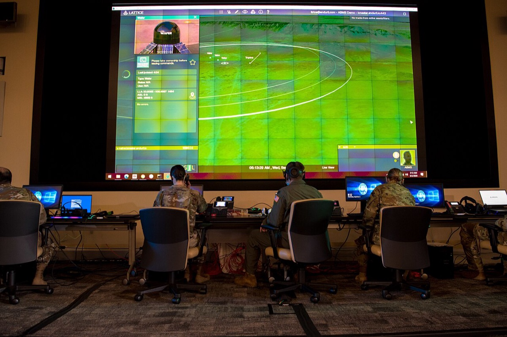
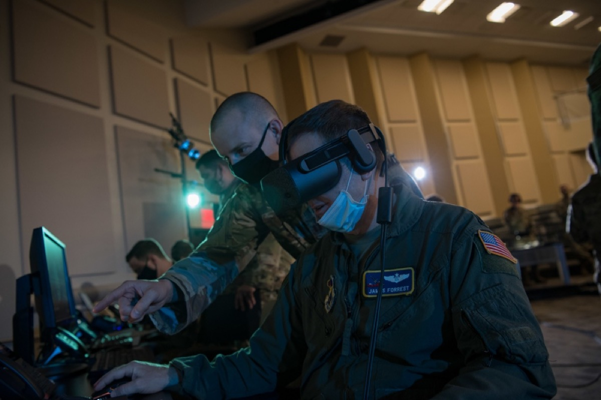
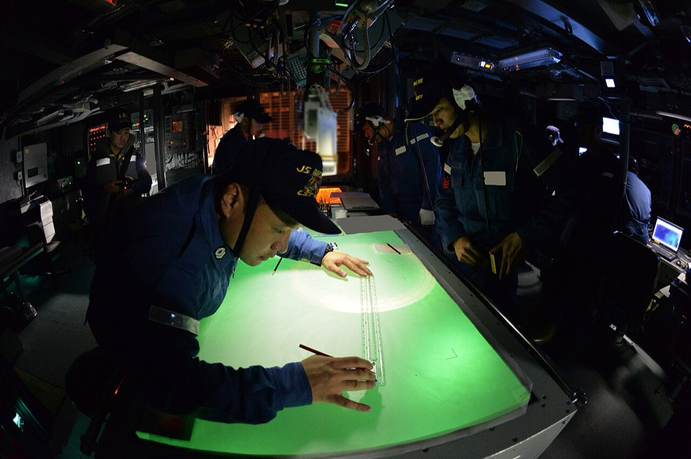
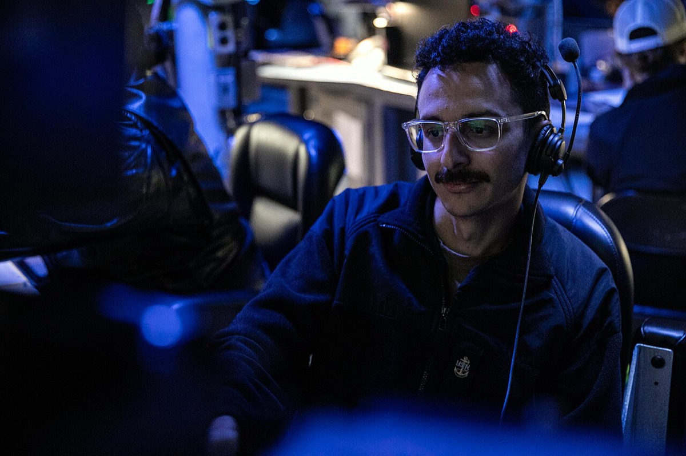
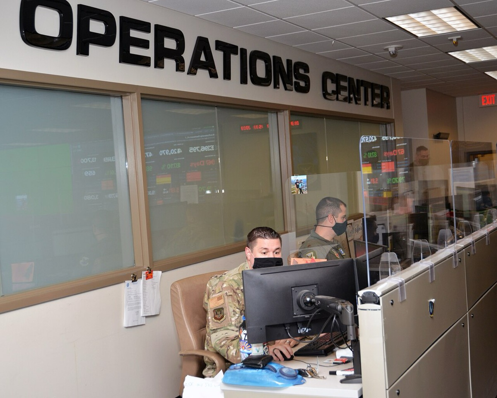
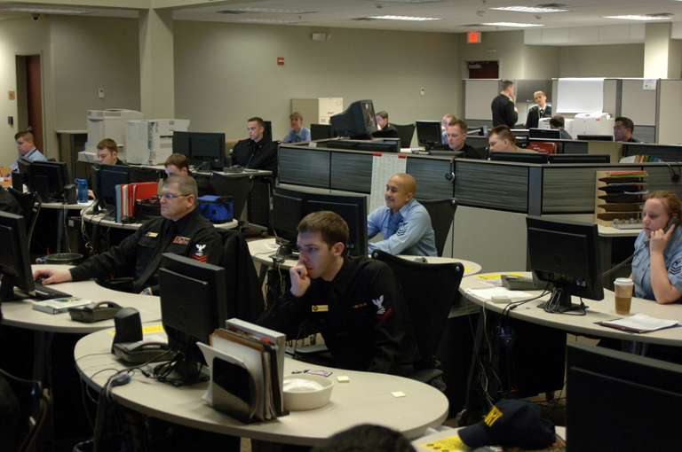

主張1は時間順序の仮説である。Andurilの日本参入では、既存商流経由のソフト実証が、完成装備の直接量産契約より先行するか。公開時系列は整合するが、中央調達全件が非公開のため判定不能である。 主張2のCMMCが参入件数を減らすかも、件数の公開集計が無く判定不能である。
防衛装備庁・Anduril一次資料・米国防総省 CMMC をもとに作成（基準日 2026-09-25）
読者と判断：Andurilへの出資・提携を評価する人が、日本での契約順序を「実証が量産より先か」で置ける。公開時系列と、全件非公開ゆえに順序を確定できないこととを分けて扱える。
分解：物理的制約は相互運用のデータ形式とサイバー認証を満たさないと米側契約連鎖に入れないこと。お金の流れは認証とデータ接続の初期費用が新規参入者側に先に載ること。利得の帰属は次のとおりである。装備庁は供給途絶回避を優先する。既存中央調達相手方はソフト実証の窓口になる。米プライムは下請けの自己評価を要求する。法と強制力はCMMCの契約条項である。時間は、ソフト実証と完成装備量産のどちらが先に契約として成立するかである。
無人機の民生部材ロットと調達数量の関係は industry ch02 第6節 に、迎撃機量産契約は Terra Drone レポート に、Anduril創業者の評価額と米契約は パルマー・ラッキー に置く。本稿はAndurilの契約時間順序と、CMMCが参入件数を減らすかの二点に限定する。
本ポータルの既存記述との差は次のとおりである。ラッキーの人物頁はAndurilの評価額と米契約と製品系列を扱い、日本の契約時間順序は扱わない。industry ch02は無人機と原価計算方式の相性を扱い、Lattice実証と量産の先后は扱わない。本稿は公開イベントの日付順と、全件非公開という限界を同一ページで突き合わせる。学術文献の網羅レビューはしておらず、「一般にまだ言われていない」とは書かない。
主張1の時間仮説の背景として、中央調達の金額中核が既存企業にあることを置く。金額が既存商流に寄っていれば、新規企業が単独で量産枠を取るより既存相手方経由の実証が先に成立しやすい。この比較の基になる。 防衛装備庁の中央調達実績では、契約金額の上位は完成装備と大型情報システムの既存企業が占める。 令和5年度1位は三菱重工業の1兆6,803億円である。2位以下は表1のとおりである。1 令和6年度1位も三菱重工業で1兆4,567億円である。2位以下は同じく表1のとおりである。2 両年度とも上位20社に Anduril・Anduril Japan・アスターは入っていない。上位20社に名前が無いことは、全件中央調達にAndurilが無いことの証明ではない。確認できる公開資料の範囲での観測である。
| 順位 | 令和5年度 | 金額 | 令和6年度 | 金額 |
|---|---|---|---|---|
| 1 | 三菱重工業 | 16,803 | 三菱重工業 | 14,567 |
| 2 | 川崎重工業 | 3,886 | 川崎重工業 | 6,383 |
| 3 | NEC | 2,954 | 三菱電機 | 4,956 |
| 4 | 三菱電機 | 2,685 | NEC | 3,117 |
| 5 | 富士通 | 2,096 | 富士通 | 1,736 |
| 18 | 住商エアロシステム | 264 | （上位20内の別構成） | — |
Anduril の日本初契約の相手は住商エアロシステム株式会社である。令和5年度中央調達で18位、契約金額264億円である（防衛装備庁PDF 3ページ。単位は億円。件数54）。1 Lattice実証は、この既存商流を経由して成立している。 令和6年度の契約方式別金額は次のとおりである。随意契約4兆6,755億円、一般競争2,354億円、FMS 8,834億円。2 金額の中核は競争入札ではなく、随意契約と既存関係に寄っている。これは既存相手方の商流が厚いという整合する観測である。契約経路の時間順序を、契約方式別金額だけで示すものではない。
主張1は時間順序の仮説である。検証変数は次の二つである。(A) 公表された最初のAnduril関連日本防衛契約の種別。(B) 基準日までに公表されたAnduril名義の完成装備量産契約の有無と日付。
Anduril Industries と住商エアロシステムは2024年7月31日、海上自衛隊向けに Lattice を用いた指揮統制の実証契約を締結したと発表した。 Anduril 側はこれを日本市場での初契約と位置づけ、金額は開示していない（Anduril一次資料）。3 相手方の住商エアロは令和5年度中央調達18位・264億円である。1 「初契約」の語は同社の自己位置づけである。本稿では、(A)の候補としてこの日付と契約種別を使う。
2025年12月3日、日本法人「Anduril Industries Japan合同会社」の設立を発表した（single-source、PR TIMES）。4 翌日、秋田県横手市のアスターと、国内での製品生産等に向けた協業検討の覚書を締結した。 範囲は組立・製造の可能性と希少アース磁石の調達とアスター製モーターの活用である。量産契約・単価・数量は未公表である（single-source、PR TIMES）。5 覚書は量産契約ではない。2026年に入っても、国内製造能力や工場取得の交渉報道はあるが、本稿の検索母集団では完成装備の中央調達量産契約の公表は基準日まで確認できない。




| 日付 | イベント | 契約段階 | 量産契約か | 出典 |
|---|---|---|---|---|
| 2024-07-31 | Anduril × 住商エアロ、Lattice実証（海自向け） | 実証。金額 N/A | 否 | 3 |
| 2025-12-03 | Anduril Japan 合同会社設立 | 法人設立。受注額 N/A | 否 | 4 |
| 2025-12-04 | Anduril × アスター、生産等の協業検討 | 覚書。単価・数量 N/A | 否 | 5 |
| 〜2026-09-25 | Anduril名義の完成装備中央調達量産契約の公表 | — | 検索母集団内で無し | 1, 2, 3, 4, 5 |
| 母集団 | 検索内容 | 結果 | 限界 |
|---|---|---|---|
| Anduril公式ニュース（英語） | Japan／Sumisho／量産・完成装備の直接契約 | 公表された初契約はLattice実証。3量産直接契約の発表は無し | 公式が発表しない契約は捕捉できない |
| Anduril JapanのPR TIMES | 中央調達・量産・直接契約 | 法人設立とアスター覚書のみ。45 | single-source。覚書は量産契約ではない |
| 防衛装備庁 中央調達上位20社（令和5・6年度） | Anduril／Anduril Japan名義 | 無し12 | 上位20以外と全件名は非公開 |
| 同上・令和5年度18位 | 住商エアロシステムの金額 | 264億円（PDF 3ページ、単位億円）1 | Lattice実証金額との比率は N/A |
公開時系列では、反証条件 (a)(b) を満たす事例は見つからない。実証が先に公表され、量産契約の公表は基準日まで無い。これは仮説と整合する。 しかし主張1を支持するには足りない。中央調達の全件名データベースは公開されていない。確認できる公開資料の範囲で「完成装備直接相手方ではない」「量産が後続に見える」のであって、非公開契約を含む全順序の証明ではない。他社の初契約母集団も無い。したがって主張1は判定不能とする。
主張2の検証対象は、規則の有無ではなく、日本企業の米側下請け参入件数と辞退件数である。件数が無ければ判定不能とする。 制度の骨格は次のとおりである。Cybersecurity Maturity Model Certification は、FCIとCUIを扱う防衛産業基盤にレベル別評価を契約条件にする枠組みである。6 DoD CIOの説明では、第1フェーズは2025年11月10日に開始した。2026年7月13日に第2フェーズ要件の実施が停止され、Phase 1の自己評価は維持されている。6 DFARS 252.204-7012に基づく NIST SP 800-171 準拠の情報保護義務は消えない。6
| 水準 | 対象情報 | 要求の概要 | 評価 |
|---|---|---|---|
| Level 1 (Self) | FCI | FAR 52.204-21の15要件 | 年次自己評価＋SPRS登録 |
| Level 2 (Self) | CUI | NIST SP 800-171 Rev.2の110要件 | 3年ごと自己評価、年次 affirmation |
DFARS 252.204-7021は、契約で指定されたCMMCレベルを契約期間中維持し、下請けへ適切なレベルを流下させることを求める。7 32 CFR 170.23は段階を定める。FCIのみなら Level 1 (Self)。CUIなら最低 Level 2 (Self)。プライムが Level 2 (C3PAO) なら下請けも同水準である。8 日本企業が米プライムの下請けとして CUI を扱う場合、国籍ではなく情報の扱いが要件を起動する。
費用の下限は DoD 自身の規制影響分析にある。 小規模事業者の Level 2 における初回自己評価と初回 affirmation は約34,277 USDである。年次 affirmation を含む3年費用は約37,196 USDである。9 Level 2 の第三者認証（C3PAO）は初回約101,752 USD、3年合計で約104,670 USDである。9 いずれも NIST SP 800-171 の実装・是正・ツール費用を含まない。規制影響分析は実装済みを前提にした推計である。
| 変数 | 取得結果 | 出典 |
|---|---|---|
| 流下条項の有無 | DFARS 252.204-7021と32 CFR 170.23で確認 | 7, 8 |
| Level 2評価費用の下限 | 小規模で初回約34,277 USD（実装費別） | 9 |
| 日本企業が流下された公開契約件数 | N/A（公開集計なし） | — |
| うち費用を理由に辞退した件数 | N/A（公開集計なし） | — |
| 費用導入前後の参入件数の差 | N/A（上記件数がない） | — |
流下と費用下限だけでは、参入を制約したかは特定できない。契約件数と辞退件数が無いため、主張2は判定不能とする。


| レイヤー | 得をする主体 | 条件・制約 |
|---|---|---|
| 中央調達の金額 | 三菱重工・川崎重工・電機系など既存プライム | 令和5〜6年度上位20社にAnduril名義は無い（全件は非公開） |
| ソフト実証の窓口 | 住商エアロ（既存商流） | 2024-07にLattice実証が先行。金額 N/A |
| 部品協業候補 | アスター等 | 覚書。量産発注がなければ売上にならない |
| 米側サプライチェーン | CMMC／NIST準拠を契約条件で求められる下請け | L2自己評価は約3.4万USD（実装費別）。日本企業の参入・辞退件数は非開示 |
受益の確定は、受注金額と認証の通過が揃った後である。 現状の公開情報では、実証が量産より先に見える入口と、制度の費用下限は見える。量産契約の全件数とCMMC辞退件数は見えない。
主張の検証で残った論点だけを挙げる。調べれば分かる制度説明はここに置かない。
| # | 問い | 手がかり |
|---|---|---|
| 1 | Anduril／Anduril Japanを相手方とする完成装備の中央調達量産契約は、全件ベースで何件あり、最古の契約日はいつか。 | 全件名と日付が分かれば、主張1の時間順序を支持または棄却できる。現状は上位20と公開発表に限られる。 |
| 2 | 住商エアロ経由の Lattice 実証契約の金額は、同社の年間中央調達規模（令和5年度264億円）に対してどの比率か。 | 金額が分かれば、ソフト実証が商流の本体か入口かを測れる。 |
| 3 | 日本企業が DFARS 252.204-7021 を流下された公開契約は何件あり、うち費用を理由に辞退した件数は何件か。 | 件数があれば主張2を支持または棄却できる。現状は判定不能の核心変数である。 |
| 4 | 海外防衛テック各社の日本における初契約は、ソフト実証と完成装備量産のどちらが先か（母集団は何社か）。 | 複数社の初契約日付が揃えば、主張1をAnduril単社から一般化できる。 |


.jpg){kind=link}